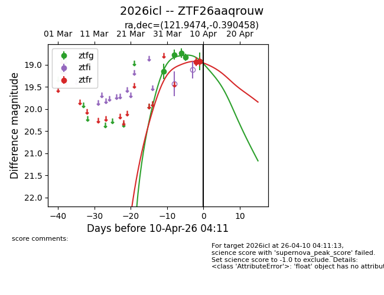
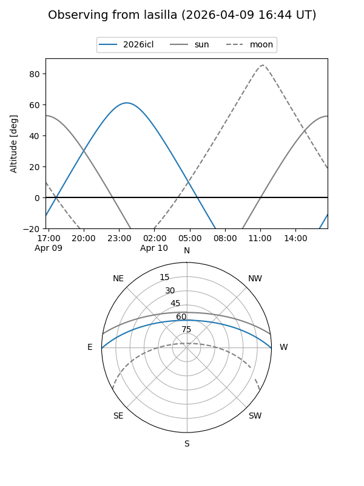
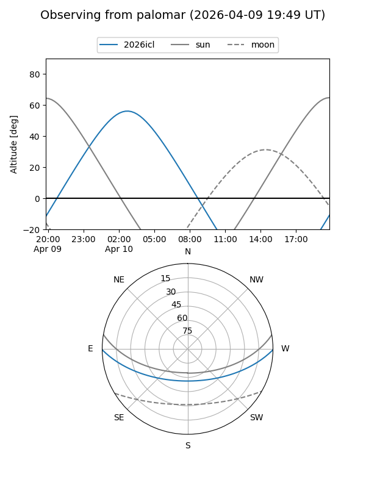
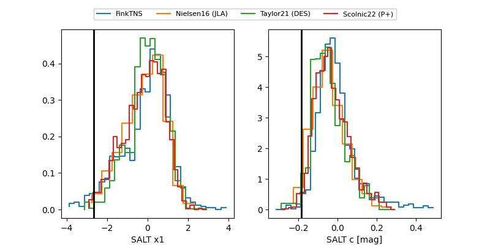

2026icl
Target 2026icl at 2026-04-10 04:17
Aliases and brokers:
FINK: link
Lasair: link
ALeRCE: link
TNS: link
YSE: link
alt names
ZTF26aaqrouw (ztf,fink_ztf)
2026icl (tns,yse)
Coordinates:
equatorial (ra, dec) = 121.9474,-0.39046
equatorial (HMS+DMS) = 08:07:47.38,-00:23:25.65
galactic (l, b) = (222.2572,+16.73401)
Flags:
Photometry:
last ztfg=18.92, ztfr=18.93
5 ztfg, 2 ztfr detections
Lightcurve

Visibility


Additional plots
